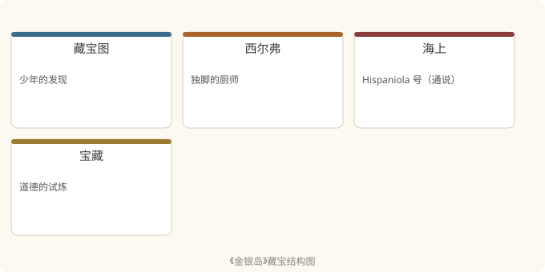

金银岛
一、基本信息
| 作者 | 罗伯特·路易斯·史蒂文森 |
|---|---|
| 成书/出版 | 出版年份待核（Britannica B294 Quick Facts 作'Treasure Island (1881)'——通行1883年说待核） Robert Louis Stevenson — Encyclopaedia Britannica（百科全书） |
| 国别/地区 | 英国 |
| 时代 | 近代 · 19世纪 |
| 体裁 | 长篇小说 |
| 语言 | 英语 |

《金银岛》藏宝结构图（主题·结构图）
二、创作背景
作者页（B294）：史蒂文森 major_works 载'金银岛、绑架'（B294 作者页定位，详见 huashenboshi 条核对）。
作者（B294）：'a writer of originality and power who produced brilliant adventure stories with subtle moral overtones'。
三、内容脉络
少年吉姆获得藏宝图——'独脚厨'西尔弗的海上阴谋（通说待核）。
'独脚水手'歌谣的起源（通说待核）。
四、主要人物表
| 人物 | 身份 | 说明 |
|---|---|---|
| 吉姆·霍金斯 | 少年 | （通说待核） |
| 朗·约翰·西尔弗 | 独脚厨 | （通说待核） |
五、主题与艺术特点
- 海盗文学的原型（通说待核）。
- '独脚、鹦鹉、藏宝图'的母题发明（通说待核）。
- 善恶的道德意味（B294：subtle moral overtones）。
六、影响与评论
- Britannica：'best known for his novels Treasure Island……'（B294）。
Robert Louis Stevenson — Encyclopaedia Britannica（百科全书） - 作者页：史蒂文森冒险经典至今广读（B294 语境）。
Robert Louis Stevenson — Encyclopaedia Britannica（百科全书）
七、阅读建议
难点
- 航海术语。
- 海盗黑话。
- 《金银岛》（人民文学出版社/上海译文版本，通说待核）。
- 英文原版（公有领域）。
史蒂文森冒险首选。
八、待核实
- 1883年出版（Cassell说）与 Britannica Quick Facts 1881 差异核对。
- 吉姆·霍金斯/西尔弗人名核对。
- '死人的箱子'章等细节待核。
本页主要来源
罗伯特·路易斯·史蒂文森的其他收录作品：化身博士